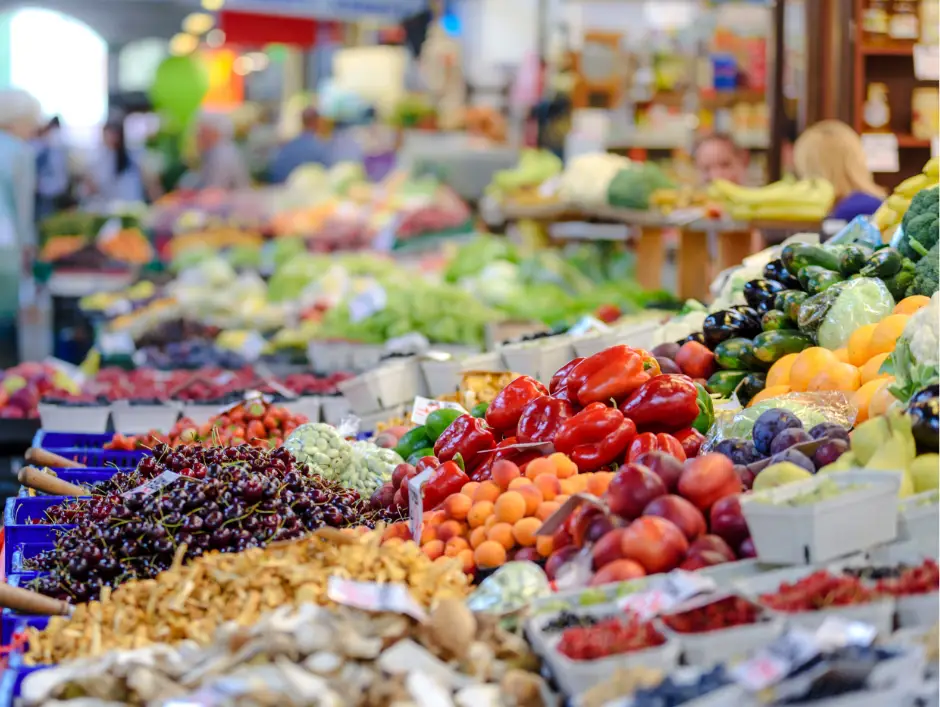
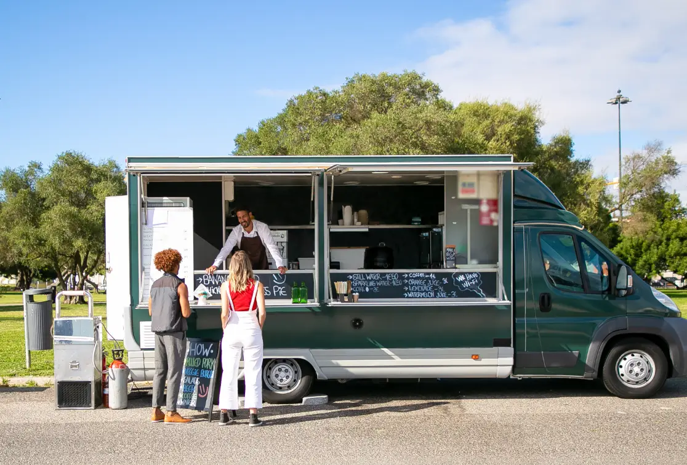
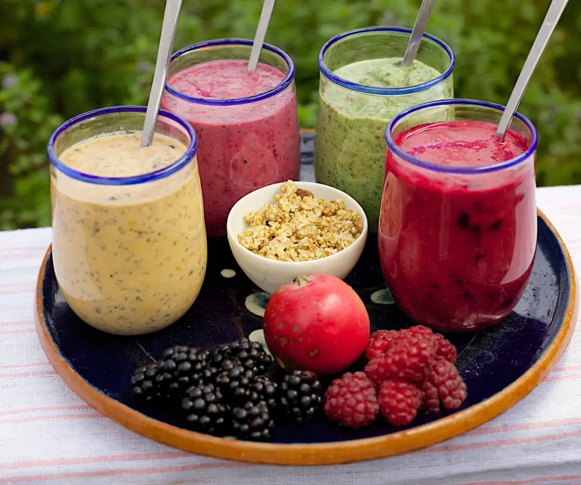

Now Open in Carlsbad!
Bountiful Foods specializes in organic, locally-grown foods. We've been serving the SoCal area for decades via seasonal pop-up fruit stands, and more recently by our catering trucks. By popular demand, we've now opened our first year-round storefront, at 1975 Chestnut Ave, Carlsbad, CA. Future plans are in the works for other storefront locations between Los Angeles and San Diego, at convenient locations where our food trucks have already been active.
Come into our brand new Carlsbad location and see what's in season! We have the widest variety of fruit and vegetables from local and regional suppliers, and all organically produced. Not headed to Carlsbad? That's okay! Check out our food truck locations, between San Diego and Los Angeles. You can enter an online order any time, and we will accept call-in orders through our Carlsbad store, during normal operating hours. Your order can be scheduled for pickup at any of our food truck locations, during scheduled hours of operation. See below for food truck information.
About Carlsbad, California
Located 30-40 minutes north of San Diego, Carlsbad is a quintessential oasis along the Southern California coast. A tourist town through and through, Carlsbad has something for everyone.
The town itself is charming, done in the traditional Spanish architecture that is popular in the region, with red tile roofs everywhere. There are romantic restaurants, spas, and stores with everything from surfing gear to designer fashions, sold in numerous boutique shops.
On the beaches there is surfing, swimming, beach combing, and more. The several lagoons are a Mecca for boating enthusiasts, bird-watchers, sport fishers, and hikers.
Current Weather

3-day Forecast
Our Food Trucks Are Rolling!
Our acclaimed food trucks may be closer to you than you realize! We have several regular stops in the greater San Diego area, including the Gaslight District, Old Town, Mission Bay, Coronado Island, and Balboa Park/San Diego Zoo area. We also try to get to as many farmers markets as we can, per their seasonal schedules. We have daily stops at the Oceanside Marina year-round, and during the warmer season we make stops at several beaches, including San Onofre/San Clemente, Laguna Beach, Newport/Balboa, and Huntington beach.
Our trucks are stocked with a wide selection of in-season produce, subject to on-hand stock. We can also arrange for at-truck pickup of your online and telephone orders, in many cases. These are now fulfilled through our headquarters in Carlsbad, which has the full selection of available produce.
To find our food trucks, schedules, special engagements, and special offers, follow us on Instagram, Facebook, and Twitter.
Click Here to Create Your Own Specialty Drink!
Speciality drinks you've created so far: 0
Bountiful Foods
1975 Chestnut Ave
Carlsbad, CA 92008
(760) 532-1704
Storefront Hours
Mon-Fri: 7am-7pm
Sat: 7am-4pm
Closed Sundays